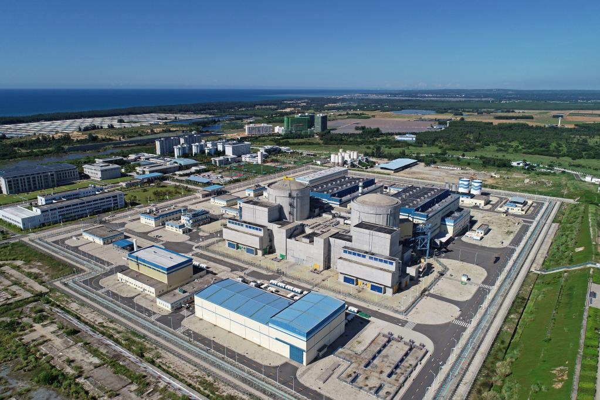

地理位置
中国海南省昌江县
核电厂历史
昌江核电厂是海南岛唯一的核电厂，共有6台机组，其各机组建成时间如下：
1号机组于2010年4月25日开工建设，于2015年11月7日并网成功，并在2015年12月25日正式商转。
2号机组于2010年11月21日开工建设，于2016年6月20日并网成功，并在2016年8月12日正式商转。
3号机组于2021年3月31日开工建设，并预期在2026年完成商转。
4号机组于2021年12月28日开工建设，并预期在2027年完成商转。
5号机组于2021年7月13日开工建设，并预期在2026年完成商转。
堆型与数量
截至2024年11月，阳江核电厂共拥有2台运行中的CNP-600型号压水堆机组（1，2号）。除此之外，它有2台在建华龙一号压水堆机组（3，4号）与一台在建玲珑一号压水堆机组（5号）。
发电基本原理
压水堆（Pressurized Water Reactor）是采用高压水来冷却核燃料的一种反应堆，其工作原理为：主泵将120～160个大气压的一回路冷却水送入堆芯，把核燃料放出的热能带出堆芯，而后进入蒸汽发生器， 通过传热管把热量传给二回路水，使其沸腾并产生蒸汽，常在一回路水中加入硼酸，用以控制反应性的慢变化。之后，二回路产生的高压蒸汽会推动汽轮机发电，再经过冷凝器和预热器进入蒸汽发生器，完成二回路水循环。

图1：压水堆示意图
荣誉与贡献
近年来，海南正在“构建以清洁煤电、核电为主力电源，燃气和抽水蓄能为调峰电源，以可再生能源为重要组成部分的电源结构”。核电投产后，海南全社会电源种类已经增至八种，分别是煤电、水电、气电、核电、风电、光伏、生物质能和余热发电。 其中昌江核电厂的建成大幅提高了海南清洁能源份量，让海南清洁能源占比由29%提高到了42%。国家能源局官网的信息显示，据统计换算，海南清洁能源2017年发电总量相当于节约标煤334万吨，减少二氧化碳排放888.44万吨，减少二氧化硫排放6.55万吨， 这其中就不乏昌江核电厂的杰出贡献。
图2：昌江核电厂全景
按昌江核电厂单台65万千瓦核电机组年发电量50亿千瓦时计算，相当于一年节约标煤多少吨？
参考文献
1. 俞冀阳.核工程基本原理.北京：清华大学出版社，2018
2. 俞冀阳.核电厂系统与运行.北京：清华大学出版社，2016
3. 2024年中国核电行业研究报告，2024
4. 中国科学院上海应用物理研究所.浅谈沸水堆与压水堆，2011
6. 国家核安全局网站
7. 国家原子能机构.海南核电比例全国第一 清洁能源体系构建进行时，2018